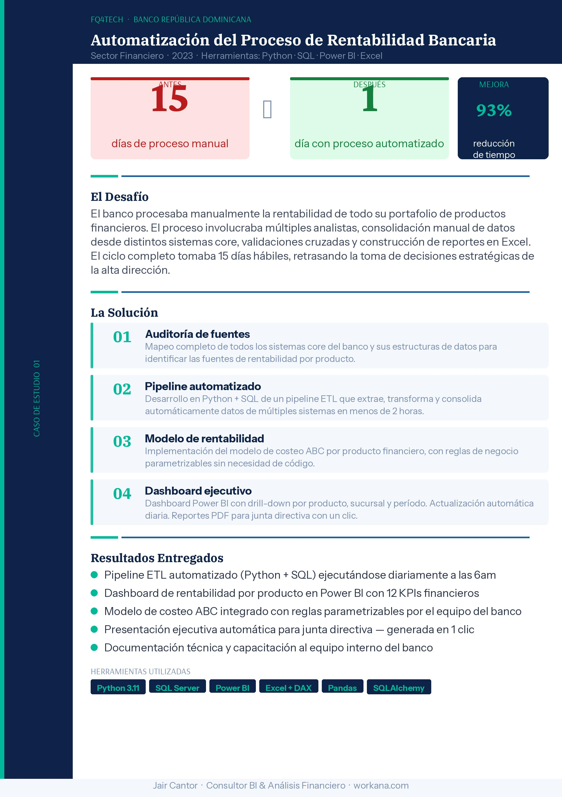
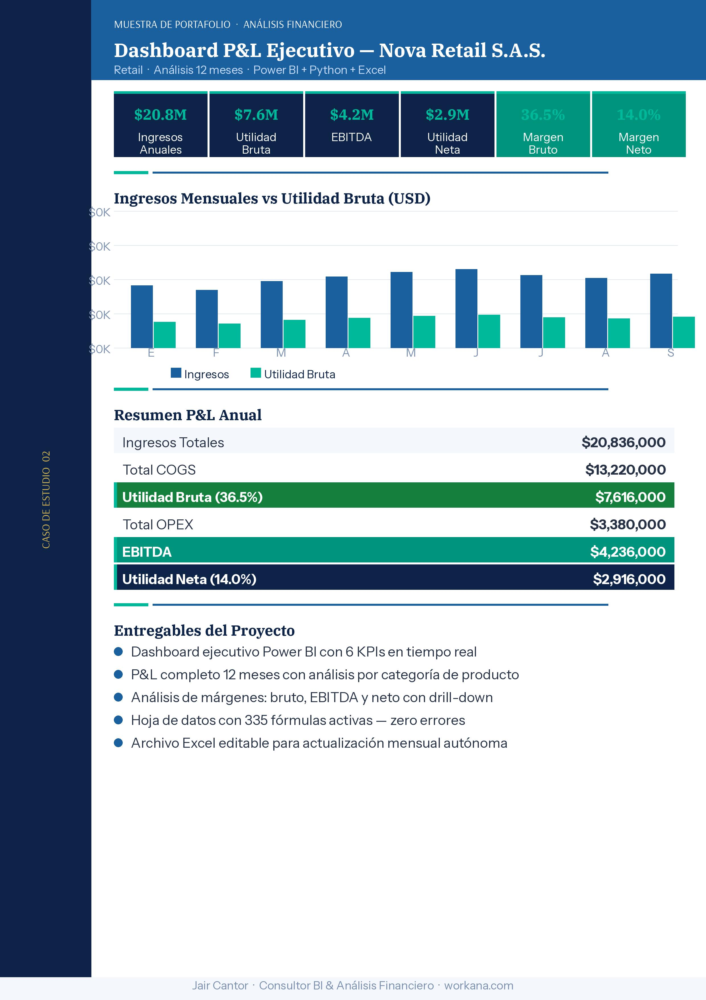

Power BI dashboards
Executive KPIs, drill-down by product, branch, or period, clear visuals, and automated refresh.
BI Consultant & Financial Analysis
I build Power BI dashboards, P&L models, forecasts, pitch decks, and Python + SQL automations for teams that need executive clarity in days, not weeks.
extract -> transform -> dashboard -> pdf
Services
You can start with a focused dashboard or build a complete BI system with automation, a financial model, and an executive presentation.
Executive KPIs, drill-down by product, branch, or period, clear visuals, and automated refresh.
Revenue, COGS, OPEX, EBITDA, gross margin, and net income analysis with actionable recommendations.
Three-year forecasts, pessimistic/base/optimistic scenarios, cash flow, and investor-ready structure.
Scripts and ETL pipelines that consolidate data from ERPs, databases, or Excel/CSV files.
Presentations for funding rounds, leadership committees, or financial communication with a clear narrative.
PDFs, presentations, or editable files generated with one click or on a schedule.
Success stories
FQ4TECH · Dominican Republic bank
A 15-business-day manual cycle became a 1-day automated process with Python, SQL, Power BI, and Excel.


Nova Retail S.A.S.
A 12-month analysis with revenue, gross profit, EBITDA, net income, and margin by category.
Services & packages
All include a clear scope, revisions, and delivery within the agreed timeline.
Basic
Professional
Premium
Work process
A clear, transparent, results-driven process.
You send me your data and objective. I define scope, tools, and timeline, then reply in under 24 hours with a detailed proposal.
I process your data, build the model and dashboard, and send a 50% progress preview to validate the approach.
I deliver the complete file before the deadline and include revision rounds to make sure the result meets the brief.
I answer questions about using the deliverables. The Premium package includes 30 days of support for minor adjustments.
I have automated real banking processes, reducing timelines from days to hours.
Power BI + Python + SQL + Excel: from extraction and modeling to executive presentation.
I work with realistic timelines, proactive communication, and editable deliverables.
I explain every decision in business language, without unnecessary technical jargon.
Contact channels · Colombia
Let's talk through the channel you prefer. I will reply with context, scope, and a clear path to turn your data into decisions.